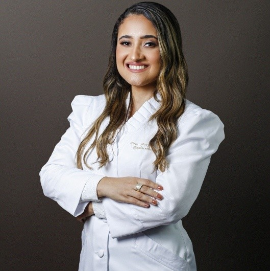
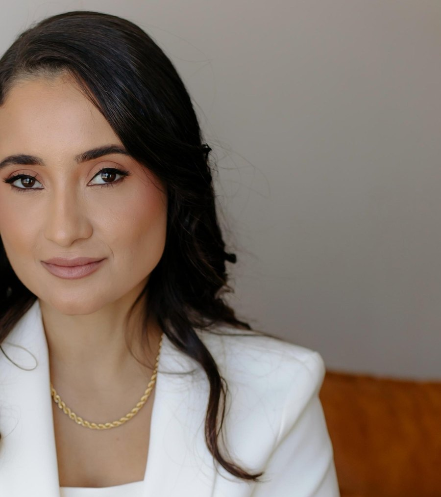

Diabetes gestacional

Endocrinologia e Metabologia
Endocrinologista · CRM-BA 30888 · RQE 21572
Dra. Jéssyca Bacelar
Diabetes, tireoide, obesidade e metabolismo, explicados com calma para você entender o próprio cuidado.
Endocrinologista formada pela Bahiana, com residência em Clínica Médica no Hospital Santo Antônio (OSID) e em Endocrinologia no CEDEBA. Consultório no STIEP, em Salvador, atendimento em Senhor do Bonfim e teleconsulta.
5,0★★★★★144 avaliações no GoogleRegistroEndocrinologistaCRM-BA 30888 · RQE 21572
ResidênciaEndocrinologia no CEDEBAEndocrinologia e Metabologia
ResidênciaClínica Médica no HSAHospital Santo Antônio · OSID
DocênciaDocente da UNIFACSBase docente oficial · 2026
Por onde começar
O que trouxe você até aqui?
Escolha o assunto e leia com calma antes da consulta. Cada página junta informação geral e o que a própria Dra. Jéssyca já disse sobre o tema. A indicação é individual, definida em consulta.
Glicose
Diabetes ou pré-diabetes
Tipos de diabetes, resistência à insulina, sensor de glicose e diabetes na gestação.
Diabetes e pré-diabetesTireoideUm exame da tireoide alterado
Hipotireoidismo, hipertireoidismo, nódulos e os exames do acompanhamento.
TireoidePeso e saúdeObesidade e sobrepeso
Uma doença crônica, tratada com plano individual e sem pressa.
ObesidadeMetabolismoColesterol ou gordura no fígado
Colesterol, triglicérides e esteatose hepática, e o que muda no dia a dia.
Colesterol e fígadoVem entender junto comigo
Uma dúvida, um vídeo curto.
“Vem entender esse caso junto comigo?” é como a Dra. Jéssyca chama para um dos vídeos do canal dela no YouTube, aberto em 2025. Aqui estão seis títulos dela, cada um com a página deste site que aprofunda o assunto.
Obesidade
“Obesidade é doença e deve ser tratada como tal”
Diabetes
“Diabetes tipo 2 ou diabetes tipo LADA? Vem entender esse caso junto comigo?”
Resistência à insulina
“Manchas no corpo e resistência à insulina”
Obesidade
“O processo de emagrecimento deve ser gradual”
Alimentação
“Alimentação e Diabetes Mellitus”
Títulos literais do canal @drajessycabacelar no YouTube. Os vídeos são informativos e não substituem a consulta.
Nas palavras dela
Quando devo procurar um endocrinologista?
“A endocrinologia é a especialidade responsável pelo equilíbrio dos diversos hormônios produzidos nas glândulas do nosso corpo, como tireoide, pâncreas, hipófise, adrenal, ovários, testículos, paratireoides, dentre outras.”
Site antigo da Dra. Jéssyca (2024), cópia no Internet Archive.
JBA lista do site da Dra. Jéssyca
- 01Acompanhamento do diabetes e pré-diabetes→
- 02Obesidade e sobrepeso→
- 03Alterações na tireoide→
- 04Colesterol→
- 05Esteatose hepática→
- 06Osteoporose e osteopenia→
- 07Hipertensão de difícil controle→
- 08Irregularidade menstrual→
“E muitas outras condições, pois a endocrinologia é uma especialidade ampla.”
Trajetória
De Senhor do Bonfim ao CEDEBA.
- OrigemSenhor do Bonfim
Natural de Senhor do Bonfim, no interior da Bahia, onde ainda atende.
Site antigo dela - 2011–2017Medicina na Bahiana
Graduação na Escola Bahiana de Medicina e Saúde Pública.
Site antigo · anos no LinkedIn - 2018–2020Residência em Clínica Médica
Hospital Santo Antônio, das Obras Sociais Irmã Dulce (OSID).
Site antigo · CNES desde 03/2018 - 2020–2022Residência em Endocrinologia
Endocrinologia e Metabologia no CEDEBA, programa credenciado pela SBEM.
Site antigo · lista da SBEM - 2022Endocrinologista
No CNES como endocrinologista e metabologista desde setembro de 2022. RQE 21572.
CNES · Doctoralia - 2026Docente da UNIFACS
Na base docente oficial da Universidade Salvador de fevereiro de 2026.
UNIFACS · base docente

O que o CEDEBA ensinou
“Ser endocrinologista é muito mais do que diagnosticar e tratar doenças; é, principalmente, ouvir o paciente, suas dores e desafios.”
Site antigo da Dra. Jéssyca (2024), cópia no Internet Archive.
No mesmo texto: “Na endocrinologia, é preciso ensinar a arte do prevenir, direcionando o paciente no caminho de um estilo de vida saudável e com qualidade.”
Conheça a médicaAcolhimento e explicação.
“Profissional excelente. Do acolhimento, às explicações e a experiência profissional. Indico de olhos fechados!”
“Adorei o atendimento e a experiência... Nota 10.”
Trechos de avaliações públicas da ficha do Google, com a data informada pela plataforma.
Onde consultar
Salvador, Senhor do Bonfim e online.
São os três botões de agendamento do bio.site dela, e o Instagram @drajessycabacelar se apresenta como “Salvador - Sr. do Bonfim”.
- 01
Salvador
Consultório no Inovant, sala 2512, no STIEP. É o endereço da ficha dela no Google.
Endereço e mapa - 02
Senhor do Bonfim
A cidade natal dela, no norte da Bahia. O agendamento de lá tem um botão próprio no bio.site dela.
Como agendar - 03
Online
Teleconsulta, agendada pelo mesmo WhatsApp do consultório de Salvador.
Como funciona
Consultório em Salvador
Inovant, sala 2512.
No STIEP, no endereço da ficha da Dra. Jéssyca no Google. A consulta é com hora marcada: confirme o dia, o horário e o endereço com a equipe.
Consultório da Dra. Jéssyca BacelarInovant · R. Arthur de Azevêdo Machado, 1459, sala 2512 · STIEP · Salvador – BA · CEP 41770-790
Atendimento com hora marcada. Também atende em Senhor do Bonfim e por teleconsulta.
WhatsApp do consultório: (71) 98154-1094
Dúvidas frequentes
Perguntas comuns
Onde a Dra. Jéssyca atende?
Em Salvador, no Inovant (R. Arthur de Azevêdo Machado, 1459, sala 2512, STIEP), em Senhor do Bonfim e por teleconsulta. Confirme o endereço com a equipe ao agendar. Veja onde atendo.
Como agendar uma consulta?
Pelo WhatsApp do consultório, (71) 98154-1094. O mesmo número agenda a consulta presencial em Salvador e a teleconsulta.
Qual é o horário de atendimento?
A consulta é com hora marcada. Confirme o dia e o horário com a equipe pelo WhatsApp.
Ela atende convênio?
O perfil dela na Doctoralia indica atendimento particular. Confirme as condições com a equipe antes da consulta.
Quais assuntos a Dra. Jéssyca acompanha?
Diabetes e pré-diabetes, tireoide, obesidade e sobrepeso, colesterol, gordura no fígado, osteoporose e alterações hormonais, como as da hipófise e o ciclo menstrual irregular. É a lista do site dela.
O tratamento da obesidade usa medicamentos?
Às vezes. A obesidade é uma doença crônica, e o plano combina alimentação, atividade física, sono e, quando indicados, medicamentos para obesidade. A indicação é individual, definida em consulta.
Agende
Vem entender o seu caso junto com a Dra. Jéssyca.
Consultório no Inovant, sala 2512, no STIEP, em Salvador, atendimento em Senhor do Bonfim e teleconsulta. Fale com o consultório pelo WhatsApp (71) 98154-1094.